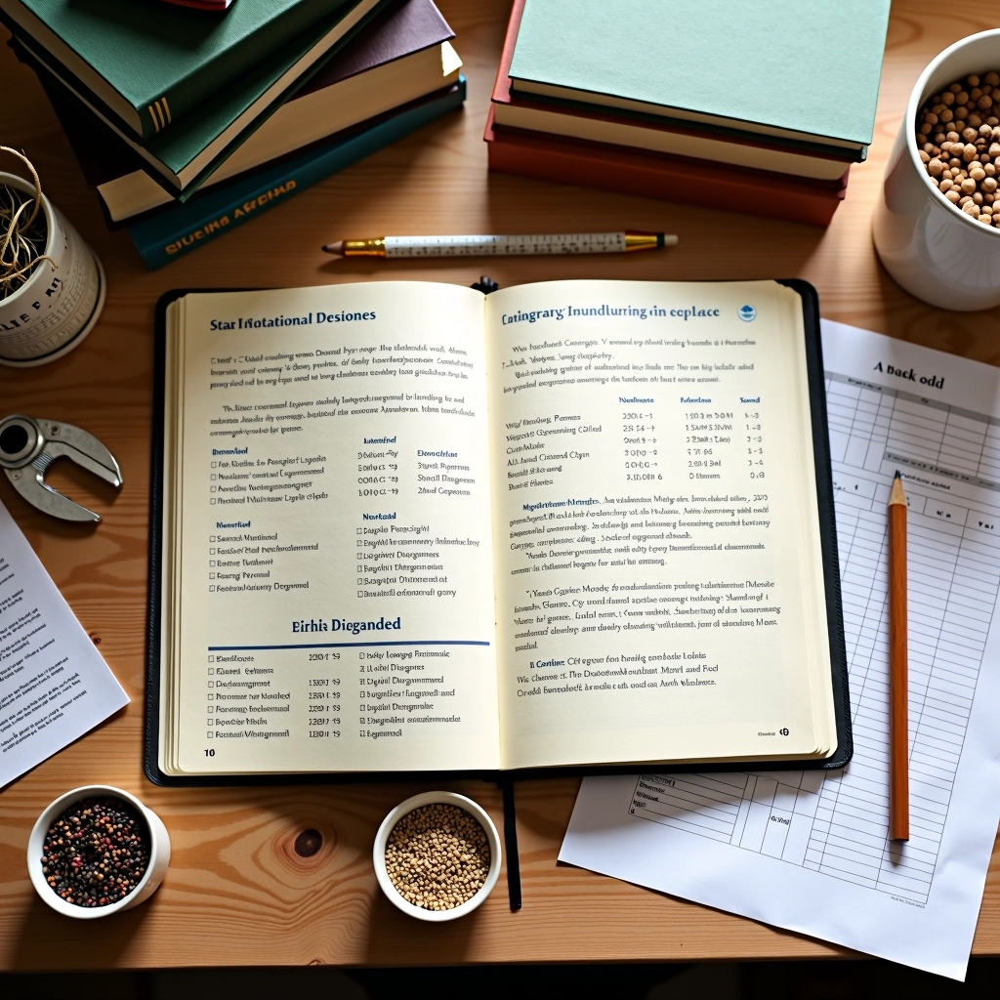
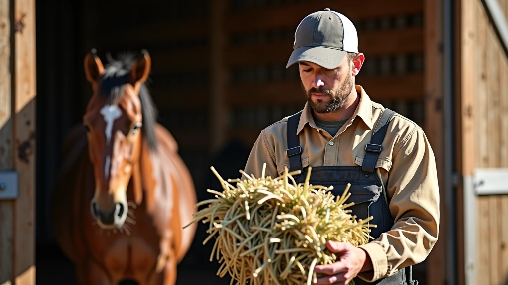
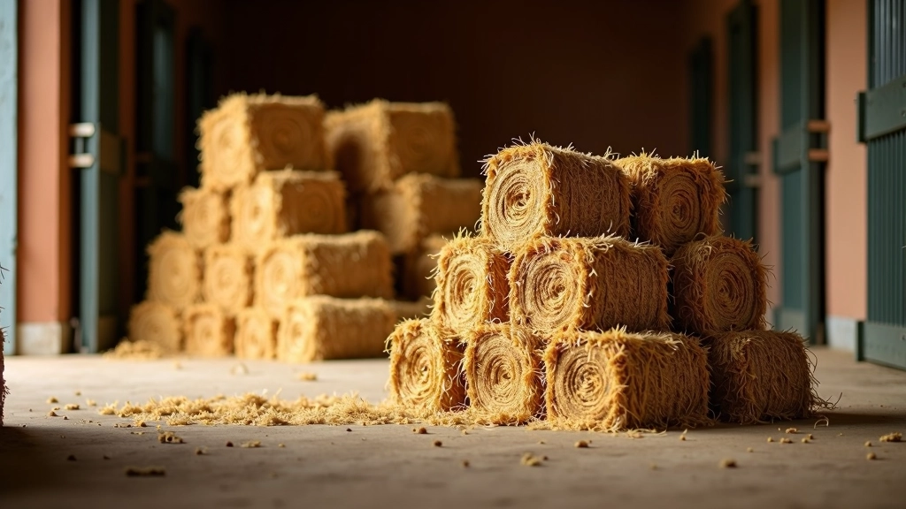
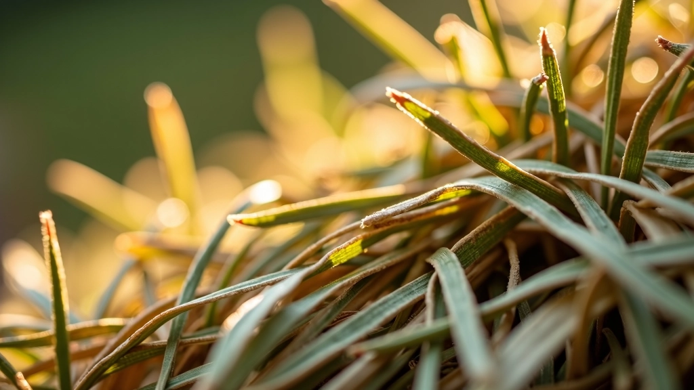
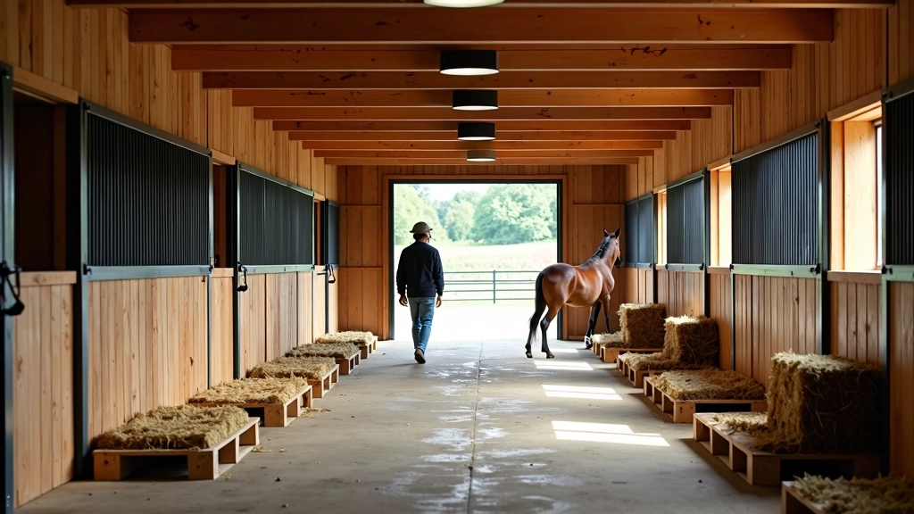

اختيار التبن المناسب لخيلك
التبن عنصر أساسي في غذاء الخيل. نشرح كيفية اختيار التبن عالي الجودة والتحقق من خلوه من الأمراض والعفن.

فريق عطايا الخيل التحريري
فريق التحرير والمراجعة
من إعداد فريق عطايا الخيل التحريري، متخصصون في تقديم إرشادات عملية وموثوقة حول رعاية الخيل والاسطبلات.
لماذا جودة التبن مهمة جداً؟
التبن هو الغذاء الأساسي للخيل. في الطبيعة، يقضي الحصان ساعات طويلة في الرعي، ولهذا السبب تم تطوره ليحتاج إلى كميات كبيرة من الألياف. عندما نختار التبن المناسب، نتأكد من أن خيلنا يحصل على التغذية التي يحتاجها حقاً.
الجودة ليست خياراً ترفاً — إنها ضرورة. التبن الرديء قد يحتوي على عفن أو أمراض أو أوساخ. هذا يمكن أن يسبب مشاكل صحية خطيرة للحصان. لكن الخبر السار أنك لست بحاجة إلى أن تكون خبيراً لتختار التبن الجيد.

كيفية فحص التبن قبل الشراء
قبل أن تشتري كمية كبيرة من التبن، خذ الوقت للفحص الدقيق. هناك عدة طرق بسيطة لتقييم الجودة. أولاً، انظر إلى اللون. التبن الجيد يكون أخضر مصفراً أو ذهبياً فاتحاً. إذا كان بنياً داكناً جداً أو رمادياً، فقد يكون قديماً أو قد تم تخزينه بشكل سيء.
الرائحة مهمة جداً أيضاً. يجب أن يشم التبن الجيد رائحة طبيعية طازجة وممتعة. إذا شممت رائحة عفن أو رطوبة أو أي شيء غريب، فلا تشتره. التبن الذي يحتوي على عفن يمكن أن يسبب مشاكل تنفسية خطيرة للخيل. اللمس أيضاً مهم — يجب أن يكون التبن ناعماً وليس جافاً جداً أو رطباً.
نصيحة عملية: احضر كيس صغير عند الشراء وخذ عينة من التبن. افحصها في المنزل بهدوء. إذا كنت تشك في الجودة، فمن الأفضل أن تختار مورداً آخر.

قائمة الفحص السريعة
اللون والمظهر
ابحث عن اللون الأخضر المصفر أو الذهبي الفاتح. تجنب أي تبن بني داكن أو رمادي أو به علامات عفن سوداء.
الرائحة
يجب أن يشم رائحة طبيعية وطازجة. لا توجد رائحة عفن أو رطوبة. إذا كنت غير متأكد، فاسأل المورد عن كيفية التخزين.
الملمس والليونة
التبن الجيد يكون ناعماً وليناً. يجب أن ينكسر بسهولة. إذا كان جافاً جداً أو هشاً، فقد يكون قديماً.
المحتويات والأجسام الغريبة
افحص بحثاً عن أي أسلاك أو زجاج أو أوساخ أو حصى. هذه الأشياء يمكن أن تؤذي الحصان. خذ عينة واشعرها بين يديك.
مستوى الرطوبة
التبن يجب أن يكون جافاً. إذا شعرت برطوبة أو سمعت صوتاً عند الضغط عليه، فقد تحتوي الحزمة على رطوبة زائدة.

تخزين التبن بشكل صحيح
اختيار التبن الجيد مهم، لكن التخزين السليم مهم بنفس القدر. التبن يحتاج إلى مكان جاف وجيد التهوية. إذا تم تخزينه في مكان رطب، سيبدأ العفن بالنمو بسرعة. نحن نوصي بتخزين التبن في حظيرة مفتوحة أو منطقة مغطاة بحيث يمكن للهواء أن يمر من خلاله.
يجب أن تكون الحزم مكدسة بطريقة تسمح بتدفق الهواء حولها. لا تكدسها بشكل محكم جداً. كما أنه من الجيد رفع التبن قليلاً عن الأرض — استخدم الخشب أو المنصات. هذا يمنع الرطوبة من الأرض من امتصاص التبن من الأسفل. في المتوسط، يجب أن يبقى التبن طازجاً لمدة سنة عند التخزين بشكل صحيح.

الخلاصة: اختر بحكمة
اختيار التبن المناسب لخيلك ليس معقداً، لكنه يتطلب انتباهاً. خذ الوقت لفحص اللون والرائحة والملمس. تحدث مع موردك عن كيفية حصاد وتخزين التبن. خيلك سيشكرك على ذلك — حرفياً. ستلاحظ فرقاً في صحته وطاقته وحالة معطفه.
تذكر أن التبن هو غذاء يومي. إنه ليس مثل الحبوب التي تقدمها مرتين يومياً. لهذا السبب، يجب أن تكون معايير الجودة عالية جداً. ابدأ مع مورد واحد موثوق وقم بفحص كل حزمة. بعد قليل، ستصبح خبيراً في اختيار التبن الجيد — وخيلك سيكون أفضل حالاً.
هل تريد تعلم المزيد عن تغذية الخيل؟
اكتشف المزيد من الأدلةإخلاء مسؤولية تعليمي
هذا المقال مخصص للأغراض التعليمية فقط وليس بديلاً عن المشورة الطبية البيطرية المتخصصة. يرجى استشارة طبيب بيطري مؤهل حول احتياجات خيلك الفردية والمشاكل الصحية المحددة. كل حصان فريد، والتوصيات العامة قد لا تنطبق على جميع الحالات.